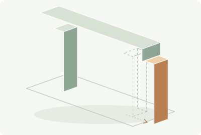
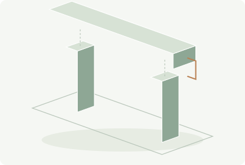
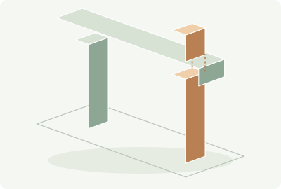
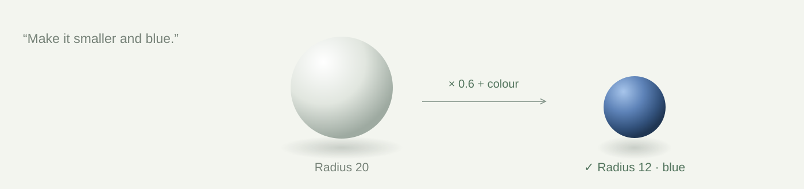
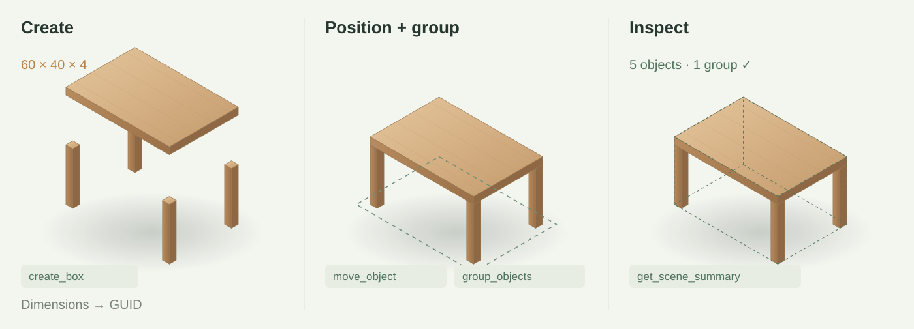
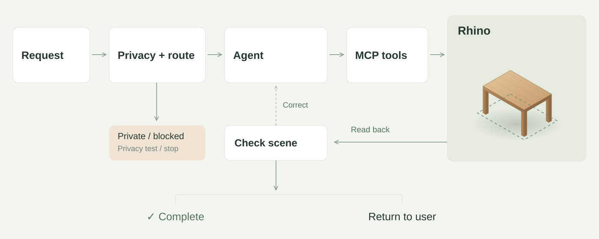
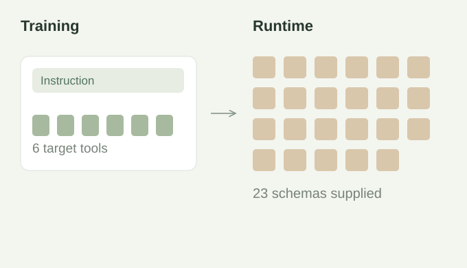
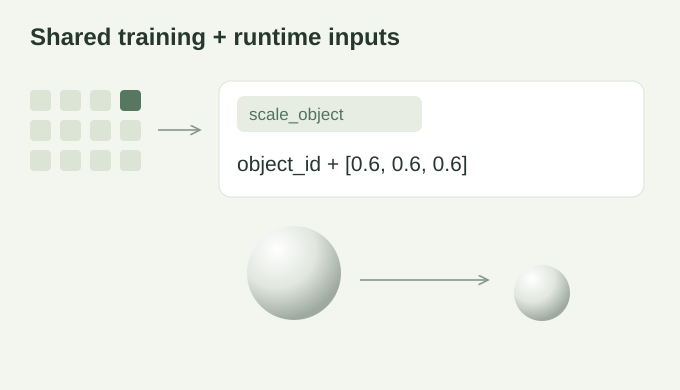

Why I built RhinoCoder
Connected to Rhino.
Still hard to get right.
I tried modelling with Codex and Claude through MCP. In my tests, requests were slow and token-heavy; recognisable shapes still contained misplaced or disconnected parts.
- Start with an ideaMy request
- General-purpose agentCodex / Claude
- Tool connectionMCP
- Editable geometryLocal Rhino

Misaligned

Disconnected

Intersecting
From a connection to a controlled workflow.
I designed RhinoCoder around explicit tool actions, scene checks and targeted recovery—with routing to manage model cost.
01Describe, build, refine.
Turn a request into editable geometry, then refine it through conversation.

02Tools that work together.
I designed typed tools with persistent object IDs, so edits stay connected and checkable.
- 07 Geometry
- 09 Transform & organise
- 02 Properties
- 05 Scene queries

03Route, check, recover.
I route by privacy and task needs, then check the scene before completing or correcting.

04Learn, align, retrain.
I compared Qwen with LoRA and redesigned training inputs after investigating failed calls.
Offline tasks with correct tool sequences
Mismatched inputs

Diagnosis: missing schemas and limited tool coverage.
Aligned inputs

I unified inputs, broadened tool coverage and repaired multi-step object references.
Offline tests on separate task sets—not Rhino modelling success rates. Compare models within each round.
Technical notes & sources
Starting point. The W9 installation guide connects Claude Desktop to Rhino through RhinoMCP Mod. The W9 activity moves from inventory inspection to a constrained pavilion plan, step-by-step execution and manual refinement; it also introduces object-pose and connectivity queries. These are the starting workflow, not tools invented for RhinoCoder. The latency, token-use and geometry issues above are observations from my own exploratory tests, not a comparative benchmark.
Design context. Schwarzkopf et al. (2025), Fostering creativity using AI towards a circular economy in architectural engineering design, explores AI-generated images as inspiration that people interpret into drawings and spatial models. It motivates further exploration of iterative co-design and 3D data; it does not evaluate MCP or RhinoCoder. Reduced latency and token use remain design goals here, without a measured before/after claim.
Visuals. The edit and tool diagrams illustrate implemented contracts.
Tools & routing. 23 versioned tools (7 + 9 + 2 + 5). Complexity takes priority over cost and latency. Self-hosted models remain experimental. The local route tests privacy rules without running a language model; critical risk stops execution. Stop preserves geometry; Retry starts a new run; Roll back removes tracked additions.
First round. Qwen2.5-Coder-7B and LoRA used 210 training records covering six tools. Re-rendering with runtime schemas expanded median prompts from 132 to 13,239 tokens, above the 2,048-token training limit. This diagnostic suggests a contract mismatch, not a single proven cause.
Second round. Shared input rendering covered 12 invocation tools and 11 selection/fallback paths. All 943 development records passed contract checks (maximum 1,296 tokens). A fresh adapter trained on 697 records for three epochs, selected on validation only. Evaluation used pre-supplied multi-step contexts and dispatched no Rhino tools; real-Rhino transfer remains unverified.